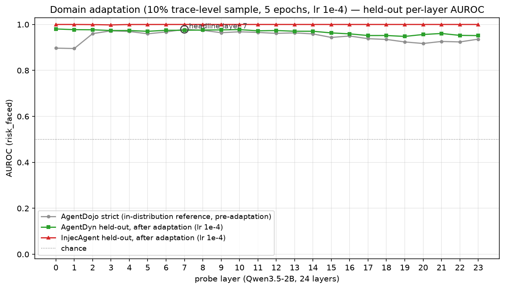

跨数据集检测结果
固定阈值评测，测试过程中未针对 LeakGauge 重新调参。
| 检测对象 | 样本数 | AUROC | 召回率 | 误报率 | F1 |
|---|
在统一页面查看提示词泄漏、间接提示词注入与内容安全三类检测能力。
一个 Probe 同时检测系统提示词与 RAG 私有片段泄漏，并分别报告两类数据集的效果。
固定阈值评测，测试过程中未针对 LeakGauge 重新调参。
| 检测对象 | 样本数 | AUROC | 召回率 | 误报率 | F1 |
|---|
系统提示词与 RAG 泄漏使用各自的数据分布单独评估。AUROC 衡量整体区分能力，召回率衡量攻击检出覆盖，误报率衡量正常请求被误判的比例。
复用影子模型的一次激活计算，通过专用 Probe 判断外部内容中是否藏有恶意指令。
10% trace 用于域适应，90% trace 留作评测。
展示域适应后各层在两套外部数据集上的 AUROC。

Layer 7 Probe，学习率 1e-4，训练 5 个 epoch，并使用 L2 锚定（λ=10）约束更新。页面仅呈现域适应后的留出集结果。
面向违法违规、暴力、色情与仇恨等内容风险的检测能力占位展示。
计划纳入正式评测的数据类别。